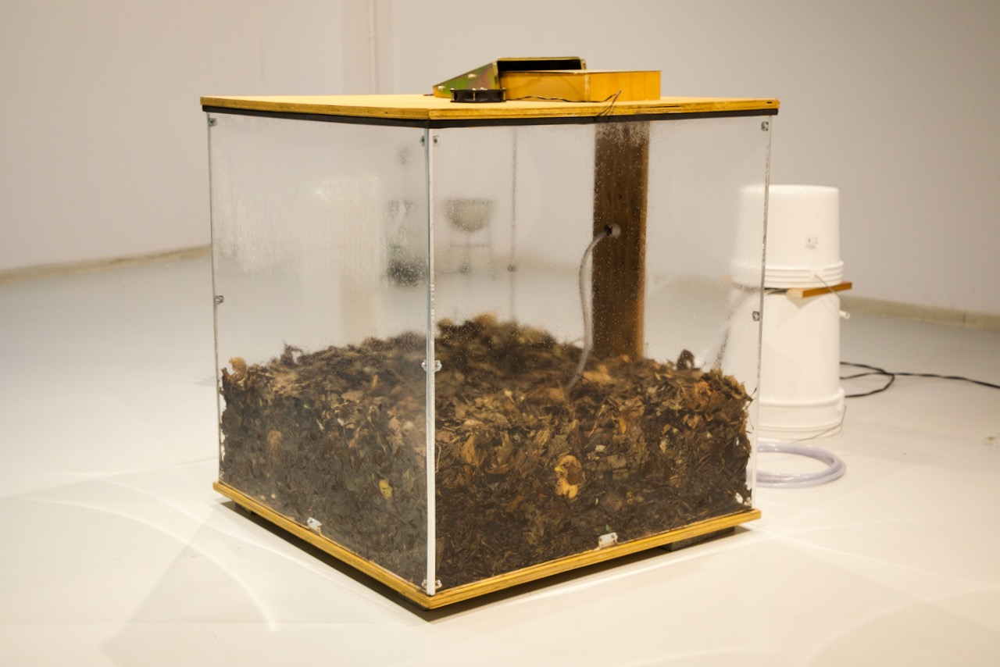
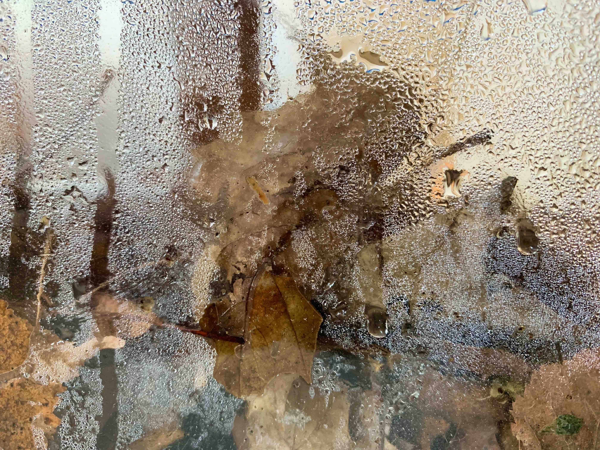
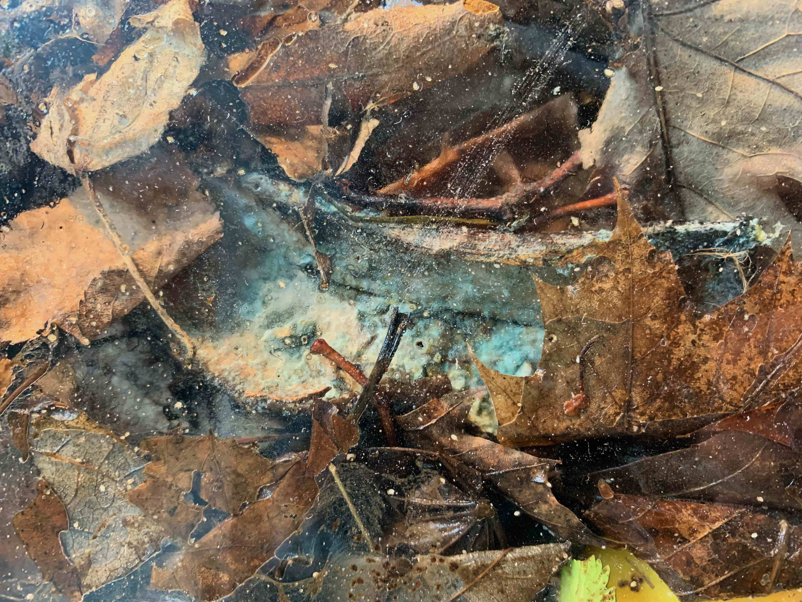
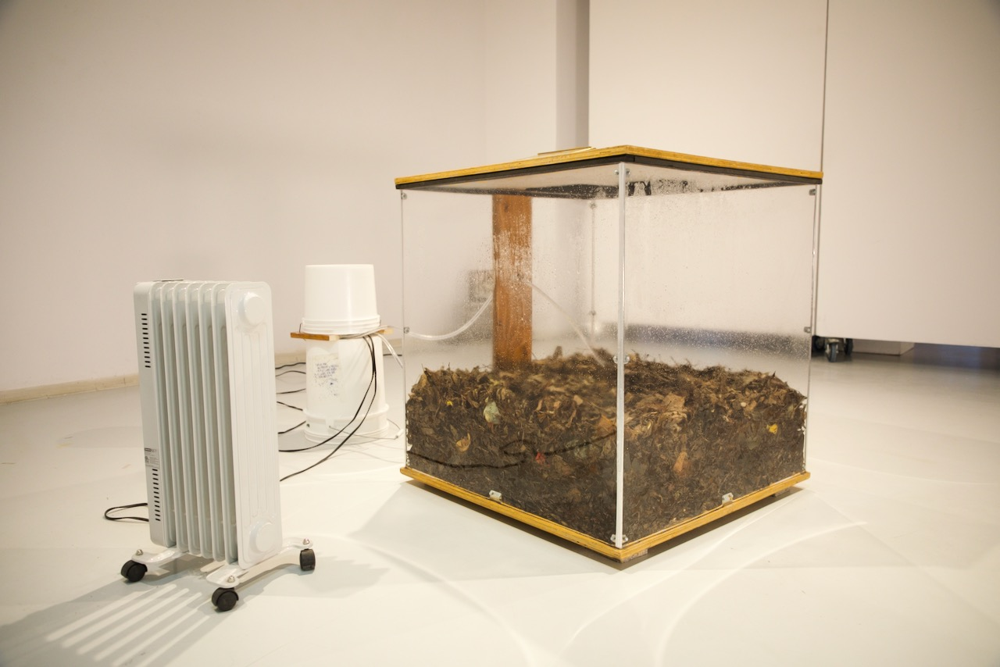
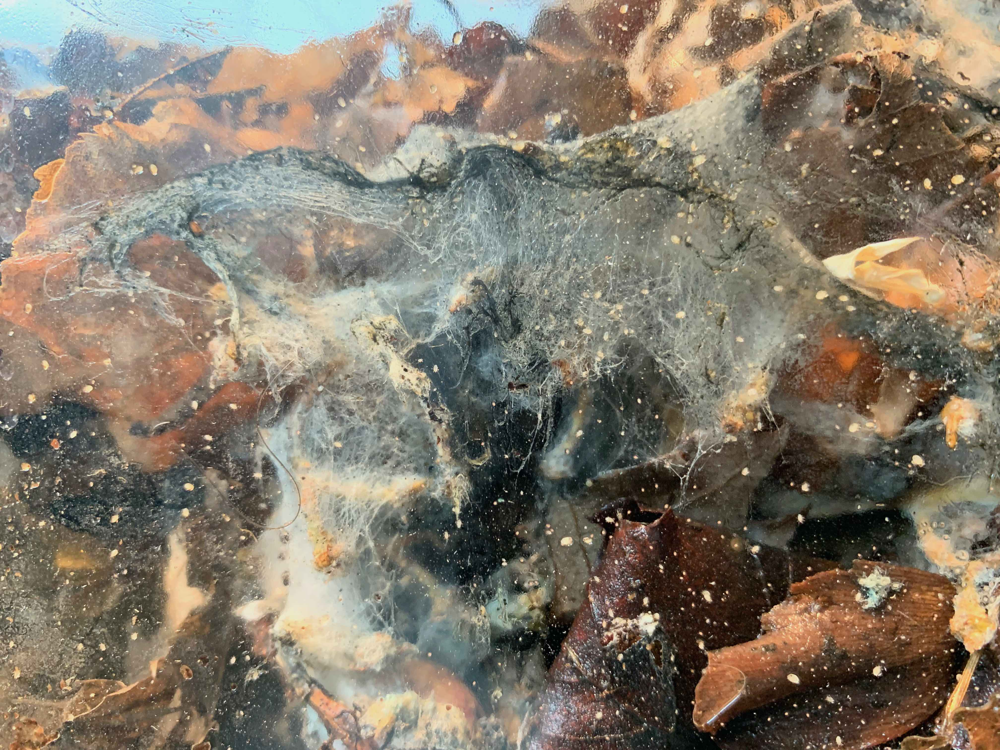
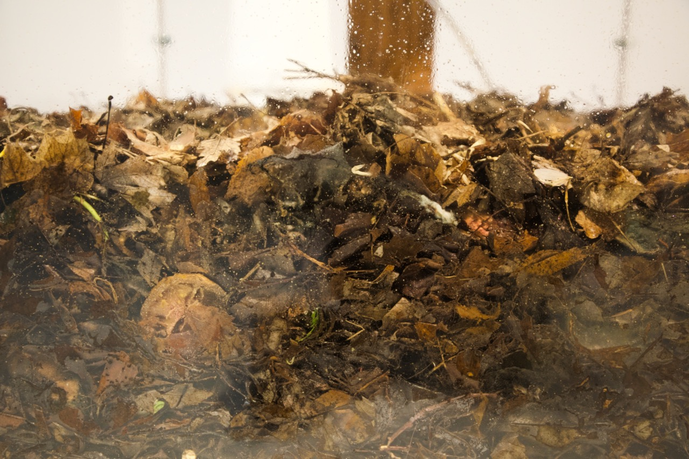
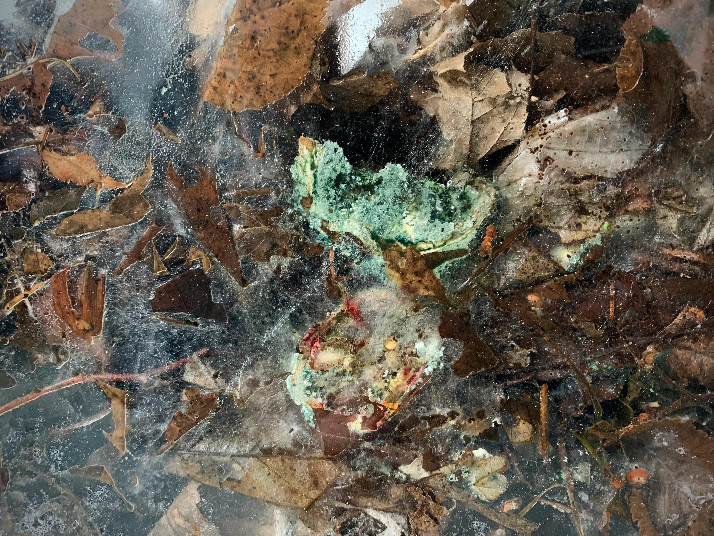
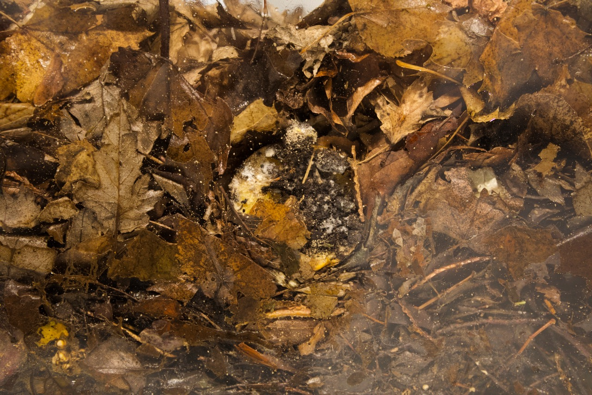
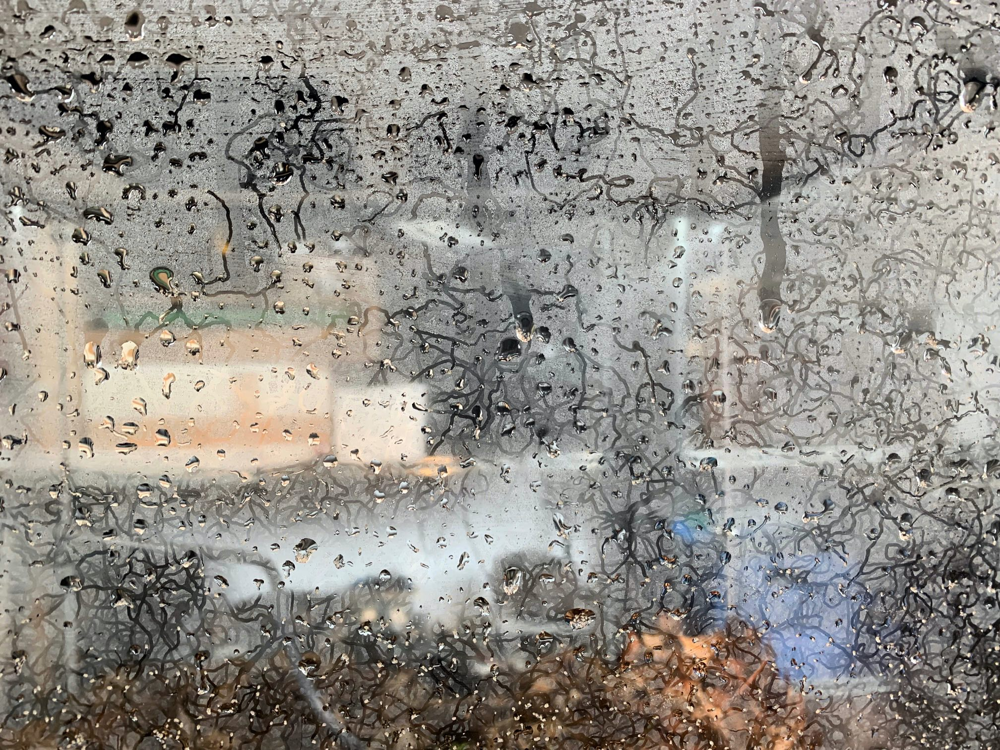

compost room, 2023.

ENG //
compost room is compost-centric. The ecosystem of a compost pile is rendered partially visible, in a living tableau of perpetual variations. Heat rises, fungal hyphae grow across the substrate, green mold engulfs fruits, smells change overtime, moisture condenses on the walls in shifting droplet patterns. As decomposition goes on, the air within the cube heats up and fills with carbon dioxide, methane and water, slowly building up a meteorological system of its own. Decomposers feast on the remains of the living and breathe out an atmosphere. compost room is attuned to the limits of the visible, as they are being subtly displaced by the accumulated traces of microscopic agents. A perhaps subscendent - rather than transcendent - mode of attention.
I am fascinated by compost both as a material process and as a cosmological model for inhabiting this world. How to compost the destructive ideal of progress? How to compost instead of innovating? The temporality of innovation is linear, inscribed in a relentless forward movement towards the creation of new things - ever-growing continents of plastic. On the contrary, the temporality of compost is circular, continuously spiralling between life and death, in a time-space where nothing is lost and nothing is created, while everything turns and transmutes. It contains no fixed object, but only movements and relations, biochemical reactions between nutrients, bacteria, fungi, and animals (humans included). Compost is soil in the making. An interspecies practice of (de)composition.
FR //
compost room est compost-centrique. L'écosystème d'une pile de compost est rendu partiellement visible, proposant une tableau vivant aux variations perpétuelles. La chaleur monte, des filaments de mycélium se déploient aux travers du substrat, des nuages de moisissures vertes engouffrent certains fruits, les odeurs se transforment, la condensation sur les murs dessine des paysages hydriques instables. À force de décomposition, l’atmosphère interne du cube se réchauffe et s’emplit de CO2, de méthane et d’eau, formant un système météorologique à part entière. Les décomposeurs digèrent les résidus des vivants et exhalent une atmosphère. compost room oriente l'attention vers le presque-imperceptible : là où les traces accumulés d’être microscopiques font plier les limites du visible.
Je suis fasciné par le compost, à la fois comme processus matériel et comme modèle cosmologique pour (mieux) habiter ce monde. Comment composter l’idéal destructeur du progrès? Comment composter plutôt qu’innover? La temporalité de l’innovation est linéaire, inscrite dans un mouvement implacable vers la création de nouvelles choses. À l’inverse, la temporalité du compost est circulaire, évoluant en spirale entre la vie et la mort, dans un temps-espace où rien n’est jamais perdu ni créé. Tout transmute. Elle ne contient pas d’objet fixe, mais seulement des mouvements et des relations, des réactions biochimiques entre nutriments, bactéries, champignons et animaux - humains y compris. Le compost est un sol en devenir. Une pratique interespèces de (dé)composition.







